Field manual · Lite Flyer
Fly Lite Flight missions on drones DJI Fly can't automate.
Lite Flyer is Lite Flight's companion app. Plan the mission in Lite Flight as usual, send it across with one tap, and Lite Flyer flies it on a Phantom 4, Mavic 2, Air 2S or one of the Minis. It takes the photos, shows where it has been, and can pick up where it stopped after a battery swap.
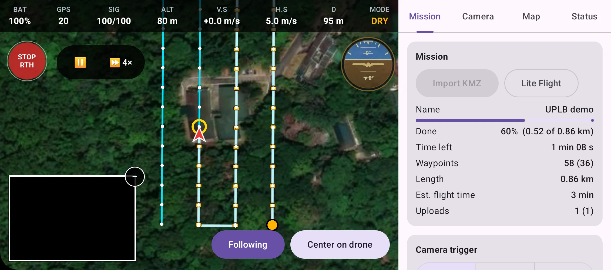
01 · Overview
How it works
Lite Flight does the planning; Lite Flyer does the flying. Every mission goes through the same five steps.
- Plan in Lite FlightDraw the area, pick your drone and settings, exactly as for DJI Fly.
- Send to Lite FlyerOne tap on Lite Flight's Export screen. Lite Flyer opens with the mission loaded.
- PractiseFly it once as a virtual dry run on the map. Nothing goes to the drone.
- Connect & checkPlug the phone into the RC and power on the drone. The Fly card lists anything that's not ready.
- Upload & startLite Flyer takes off, flies the lines, takes the photos and comes home.
Unlike DJI Fly's Timed Shot, Lite Flyer fires the camera for you: at Lite Flight's auto-capture points, or every so many seconds or metres along each line. You don't set anything on the drone's camera to get the shots. You do need an SD card in the drone.
02 · Install
Which app, which drone
DJI's older and newer drones use two different SDKs that can't live in one app, so Lite Flyer comes in two versions. Install the one for your drone, or both if you fly both kinds.
| App | Drones | How it flies the mission |
|---|---|---|
| Lite Flyer | Phantom 4 (all versions), Mavic 2 Pro / Zoom / Enterprise, Mavic Pro | Onboard waypoint mission. The route is uploaded to the drone, which flies it by itself. Long routes go up in batches of up to 99 waypoints. |
| Lite Flyer | Air 2S, Mavic Air 2, Mavic Mini, Mini SE, Mini 2 | Virtual sticks. These drones have no waypoint missions in DJI's SDK, so Lite Flyer steers the drone itself, 25 times a second, over the RC link. |
| Lite Flyer 5 | Mini 3, Mini 3 Pro, Mini 4 Pro | Virtual sticks, as above. |
Lite Flyer runs on a DJI SDK key with a small device limit, so it isn't a public download like Lite Flight. It's shared by Google Drive link with at most 15 people. Each request is evaluated, and access isn't guaranteed. To request it, email ldbarua@gmail.com or DM on Facebook with:
- your full name
- your affiliation
- your drone model, and the device you'll install Lite Flyer on
- 3–5 sentences on what you'll use the app for, and why you should be given one of the places
Please don't pass the link or the APK on: each install uses one of the places.
The Status tab shows which way your drone is being flown under Mission engine. The difference matters in two places: with virtual sticks Lite Flyer must stay open for the whole flight, and the mission can't continue out of RC range (see Signal loss).
Lite Flyer has been flown on a Mavic 2 Pro and a Phantom 4, and Lite Flyer 5 bench-tested on a Mini 3. The first time you fly a model, plan a short mission close to you at a safe height, keep your thumbs on the sticks, and be ready with STOP/RTH.
03 · At home, with internet
Before you go to the field
Tick these off while you still have internet.
Only one app can talk to the drone at a time. When you plug in the RC, Android may ask which app to open: pick Lite Flyer, Just once. If DJI Fly, DJI GO 4 or the other Lite Flyer is running, swipe it away first.
04 · Hand-off
Get a mission into Lite Flyer
The quickest way is straight from Lite Flight. Any Lite Flight KMZ file works too.
From Lite Flight
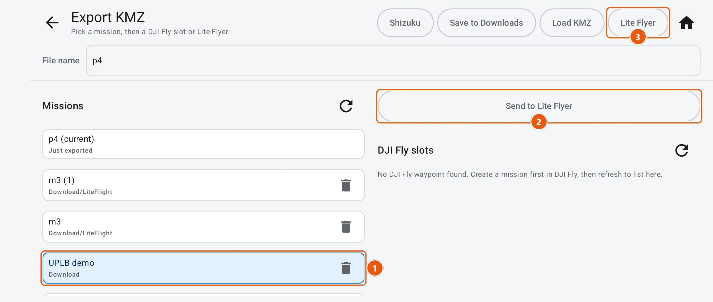
- Pick the mission in Lite Flight's Export screen.
- Send to Lite Flyer. Lite Flyer opens with the mission loaded and named.
- Lite Flyer just opens the app, without sending anything.
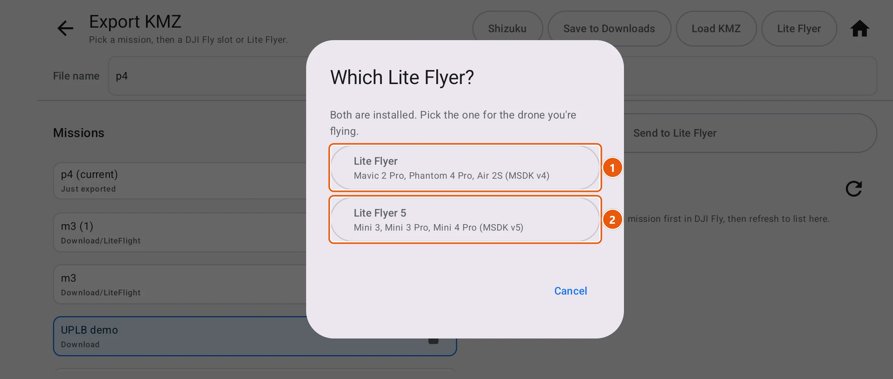
- Lite Flyer for MSDK v4 drones.
- Lite Flyer 5 for the Minis on MSDK v5.This question only comes up when both apps are installed. With one, Lite Flight opens it directly.
From a KMZ file
Tap Import KMZ on Lite Flyer's Mission tab and pick the file, for example one saved with Lite Flight's Save to Downloads. You can also open or share a .kmz into Lite Flyer from a file manager. Lite Flyer reads Lite Flight's KMZ files: the heights, speeds, headings, gimbal angle and photo points come with it.
The Lite Flight button next to Import KMZ switches to Lite Flight, to change the plan and send it again. Lite Flyer keeps its connection to the drone while you're away.
05 · Orientation
The flight screen
One screen: the flight view on the left, four tabs on the right.
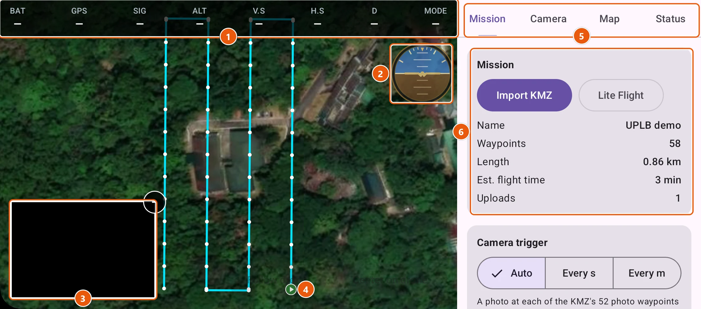
- Telemetry. Battery, GPS satellites, signal, altitude, vertical and horizontal speed, distance from home, flight mode.Tap H.S to switch between m/s and km/h.
- Attitude dial. Pitch and roll, with the gimbal angle.
- Video. The drone's camera. Tap it to swap it with the map; the − button tucks it away.
- Start waypoint ▶. Where the mission begins. Tap any flight line to start from that leg.
- Tabs: Mission, Camera, Map and Status.
- Mission card. Name, waypoints, length, estimated flight time and the number of uploads. While flying it shows progress and time left.
06 · Before take-off
Mission settings
Two choices on the Mission tab. The defaults suit most missions.
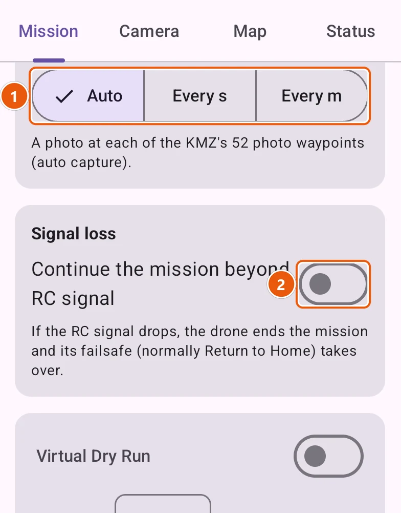
- Camera trigger.Auto (default) shoots what the mission says: at each of Lite Flight's auto-capture photo points, or at the mission's interval.
Every s / Every m overrides the mission with a photo every so many seconds or metres along each line. - Continue the mission beyond RC signal. Off by default: if the RC signal drops, the drone's failsafe (normally Return to Home) takes over.On (onboard drones only), the drone keeps flying its batch out of range. At the end of a batch it heads home until the signal is back, then carries on. Check the route for obstacles first. With virtual sticks this switch is greyed out: Lite Flyer needs the link to steer.
07 · No drone needed
Practise with a dry run
A virtual drone flies the mission on the map: take-off, every line, every photo, the way home. Nothing is sent to an aircraft, so you can do it at home.
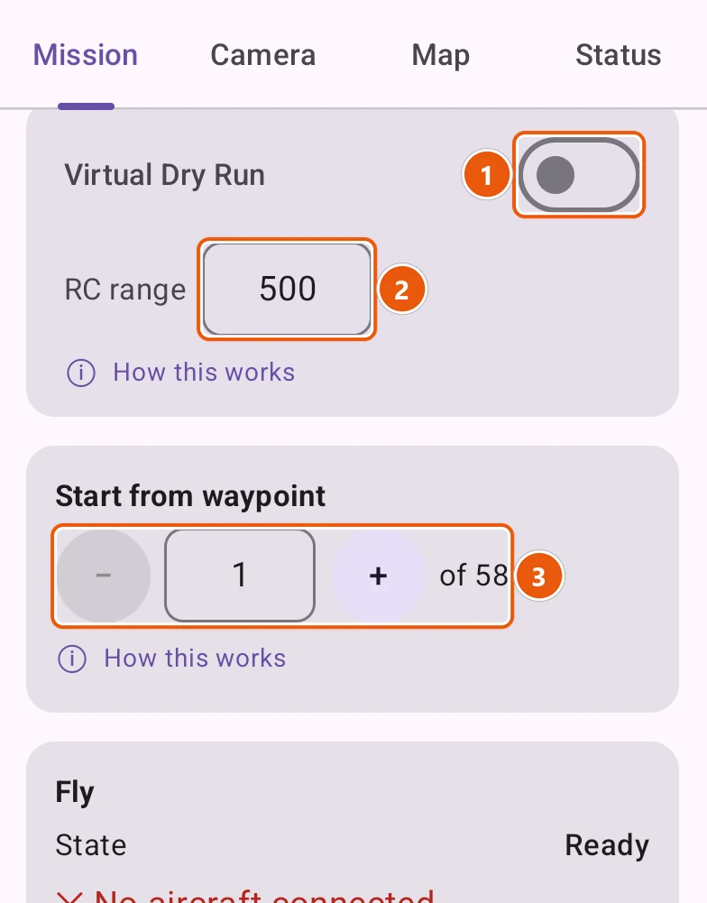
- Virtual Dry Run. Turn it on, then Upload & start as for a real flight. MODE shows DRY.
- RC range. How far the pretend signal reaches; blank means no limit. Set it short to watch a long mission switch batches out of range.
- Start from waypoint. Which waypoint the mission starts at (resume).
During a dry run, ⏸ pauses the virtual drone and ⏩ speeds it up 2×, 4× or 8×. Turn the switch off when you're done; the real drone can't be flown while it's on.
08 · In the field
Fly the mission
Connect, read the Fly card, start.
- Power on the RC, plug in the phone, then power on the drone. Pick Lite Flyer (Just once) if Android asks.
- Wait for the telemetry bar to fill in and GPS to settle. The drone can start on the ground or already in the air.
- For virtual-stick drones (Air 2S, the Minis), set the RC's flight mode switch to Normal (N).
- Check the Fly card at the bottom of the Mission tab, then tap Upload & start and confirm.
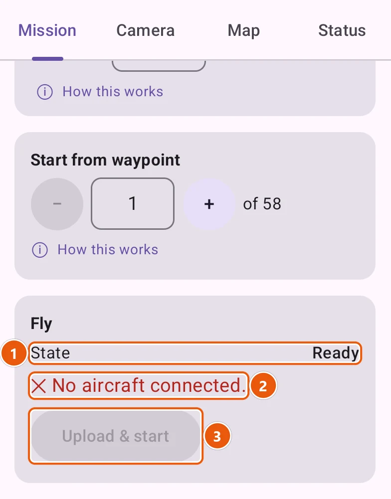
- State: Ready, Uploading, Flying (batch and waypoint), Paused, Finished or Stopped.
- Pre-flight checks. Red ✕ lines block the start; orange ! lines are warnings to read.
- Upload & start. Enabled once nothing blocks. The drone takes off by itself if it's on the ground.
| Check | Kind | What to do |
|---|---|---|
| No aircraft connected | Blocks | Check the cable and that the drone is on. Close DJI Fly / DJI GO 4. |
| DJI SDK not registered yet | Blocks | Open Lite Flyer once with internet (Status → SDK, Retry registration). |
| GPS too weak | Blocks | Wait in the open until GPS reaches level 3. |
| … isn't supported for missions | Blocks | This drone isn't one of the supported models, or it belongs to the other Lite Flyer. |
| Virtual sticks / Set the RC to N | Warning | Lite Flyer flies this drone itself: keep the app open and on screen. Move any stick to take over. |
| First waypoint is … m away | Warning | Over 500 m. Make sure the way there is clear. |
| Battery at … % | Warning | Below 40 %. Swap it if the mission is long. |
| No card / card full | Warning | The mission flies but photos won't be saved. |
While it flies
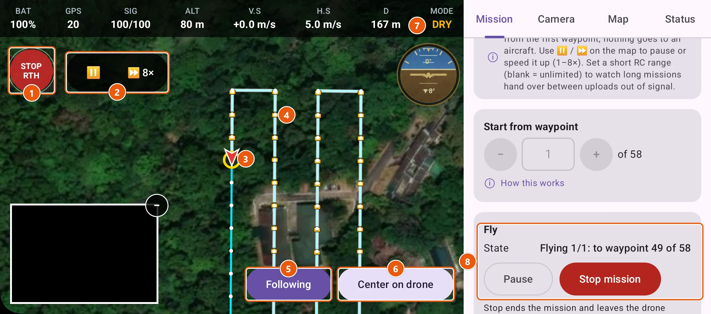
- STOP/RTH. Hold 1.5 s to stop and bring the drone home (next chapter).
- ⏸ / ⏩ pause and speed up the virtual drone. Dry runs only.
- The drone, pointing where it's heading; the white line is where it has flown.
- Photo markers, one per photo taken.
- Follow drone keeps the map centred on the drone.
- Center on drone jumps to it once.
- MODE shows the drone's flight mode, or DRY.
- Fly card: Pause / Resume, and Stop mission.
Long missions are flown in several uploads (the Mission card shows how many). Between uploads the drone hovers for a moment while the next batch goes up. If it's out of range at that point it heads home until the signal is back, then carries on. The screen stays on for the whole mission, and a notification lets you return to Lite Flyer if you switch apps.
09 · Safety
Stop, come home, resume
The RC's own Pause and RTH buttons work at any time and override Lite Flyer. On virtual-stick drones, moving any stick hands control straight back to you.
| Control | What happens |
|---|---|
| Pause / Resume | The drone hovers in place; Resume carries on along the route. |
| Stop mission | Ends the mission and leaves the drone hovering. Fly it with the sticks or press RTH. |
| STOP/RTH (hold 1.5 s) | Stops the mission and starts Return to Home in one go. Progress is kept. |
| RC signal lost | The drone's failsafe takes over (normally Return to Home), unless Continue beyond RC signal is on. |
Carry on after a battery swap
Lite Flyer remembers the last waypoint each flight reaches, and the white line on the map shows where the drone has been. After landing, the Start from waypoint card offers Resume from N (or Start over). Swap the battery, tap Resume, then Upload & start: the drone flies straight to that waypoint and finishes the job. You can also pick any waypoint with − / +, type it in, or tap a flight line on the map.
If the app was closed mid-mission, reopen it: it reconnects to a mission that's still flying. When it can't tell what happened while it was away, it shows Stopped with the reason and offers the resume instead of guessing.
10 · The other tabs
Camera, Map and Status
Camera
With the drone connected, the Camera tab sets exposure for the mission's photos: mode (Auto, Manual and, where the camera has them, shutter or aperture priority), ISO, shutter speed, aperture, exposure compensation and white balance, plus buttons to take a test photo or record video. It only lists what your camera can do. In Auto the camera picks ISO and shutter itself and the tab says so; choose M to set them. The tab also warns when there's no SD card or it's full.
Manual shots are off while a mission runs: the mission's trigger fires the shutter.
Map
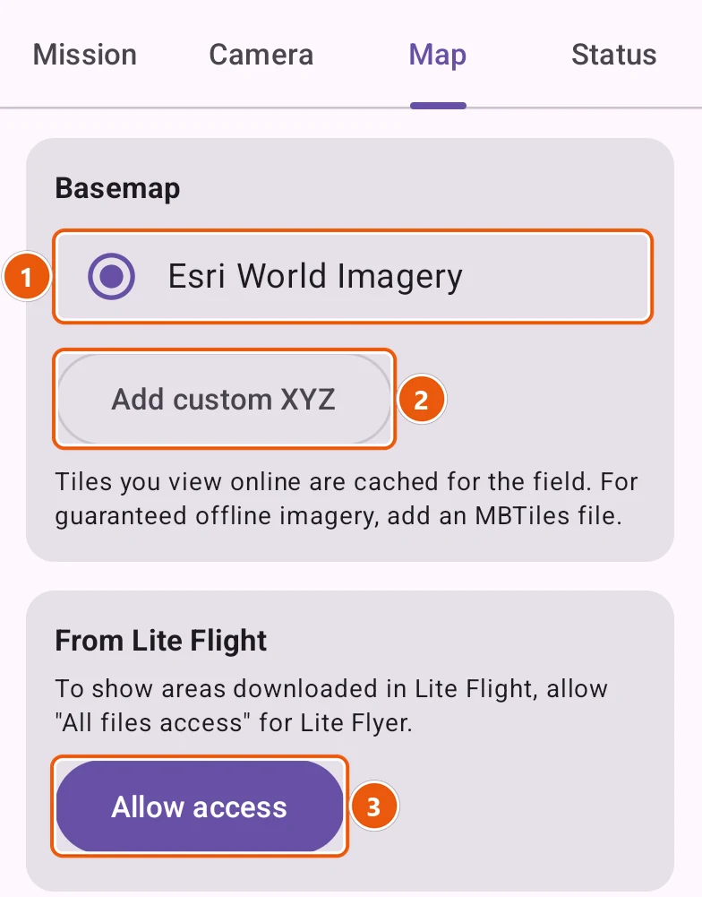
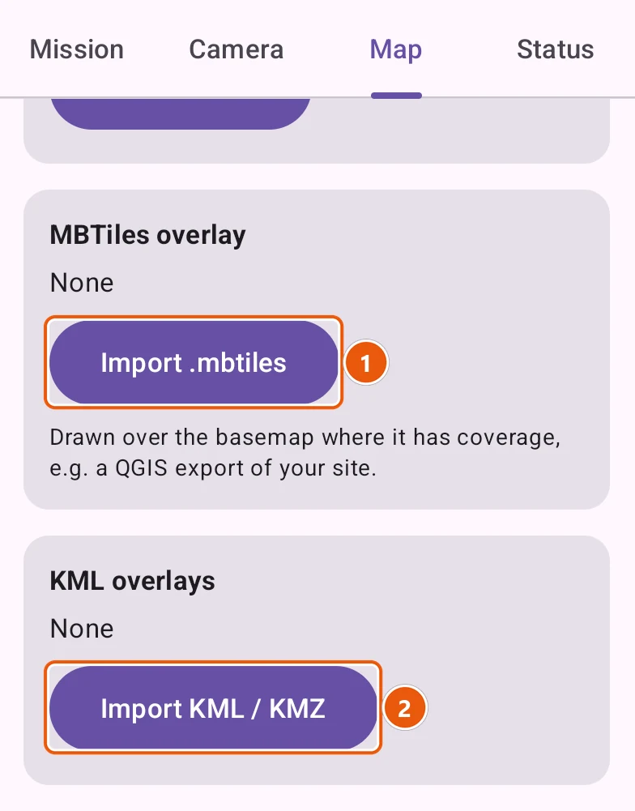
- Basemap. Esri World Imagery, or your own XYZ tile source. Tiles you view online are kept for the field.
- Add custom XYZ adds a tile URL of your own.
- From Lite Flight. Tap Allow access and switch on "All files access" so Lite Flyer can show the areas Lite Flight shared. This is the reliable way to have imagery offline.
Lower down, Import .mbtiles lays an MBTiles file (for example a QGIS export of your site) over the basemap, and Import KML / KMZ draws reference shapes such as field boundaries.
Status
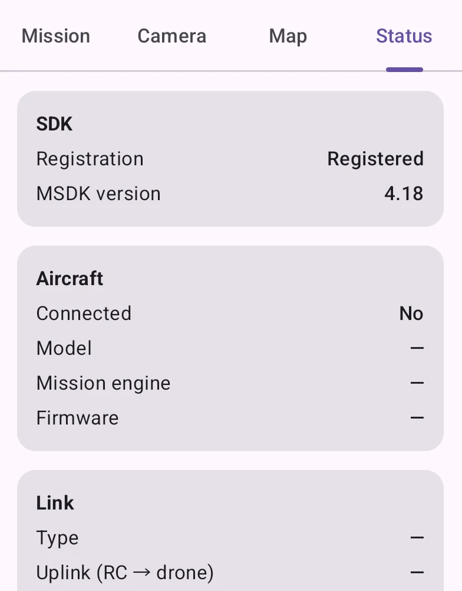
The first place to look when something won't start:
- SDK: registration and the DJI SDK version, with Retry registration if it failed.
- Aircraft: connected or not, the model, the Mission engine (onboard or virtual sticks) and firmware.
- Link: signal both ways.
- Flight: battery, GPS, home point, flight mode, flying or not, altitude.
11 · When something's off
Troubleshooting
"No aircraft connected", but the drone is on
Unplug and replug the phone, and pick Lite Flyer when Android asks. Make sure DJI Fly, DJI GO 4 and the other Lite Flyer are closed. Check Status → Aircraft.
Lite Flight says Lite Flyer isn't installed
Install Lite Flyer or Lite Flyer 5 from the Google Drive link you were sent (see Limited release), then try Send to Lite Flyer again.
The map is blank in the field
Online tiles are only kept for places you've viewed. For a sure thing, download the area in Lite Flight with Share with Lite Flyer on, and allow "All files access" for both apps. Or import an MBTiles file on the Map tab.
Take-off didn't start
Some drones refuse to take off by app right after power-on while GPS is still settling. Wait a minute and try again, or take off with the sticks and then tap Upload & start: Lite Flyer skips take-off when the drone is already flying.
A virtual-stick mission ended by itself
Virtual-stick flights end when the RC takes over: a stick moved, the Pause button, the flight-mode switch, low-battery RTH or lost signal. The Fly card says why. Resume from the last waypoint when ready.
No photo markers appear
Check the Camera trigger. With Auto and a mission that has no capture set, Lite Flyer takes no photos; pick Every s or Every m. Also check the SD card warning.
The shutter setting is greyed out
The camera is in Auto (P). Choose M on the Camera tab to set shutter and ISO yourself.